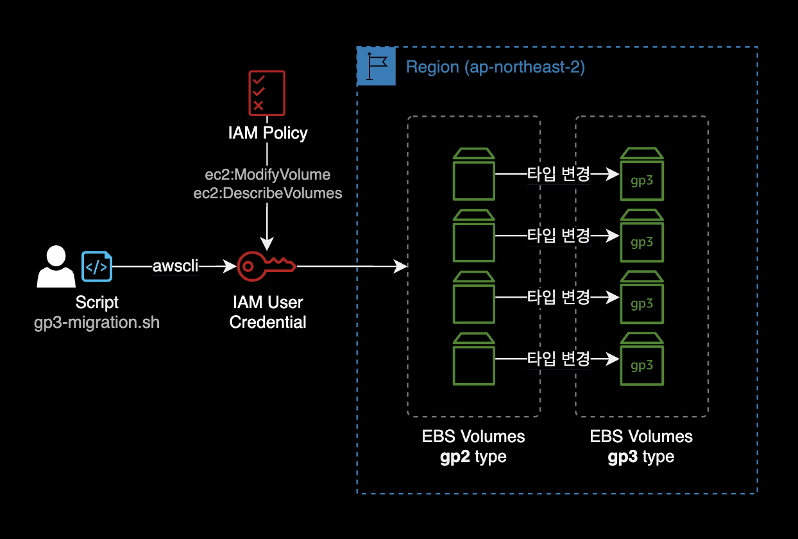
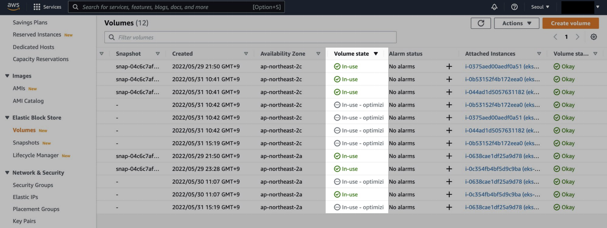
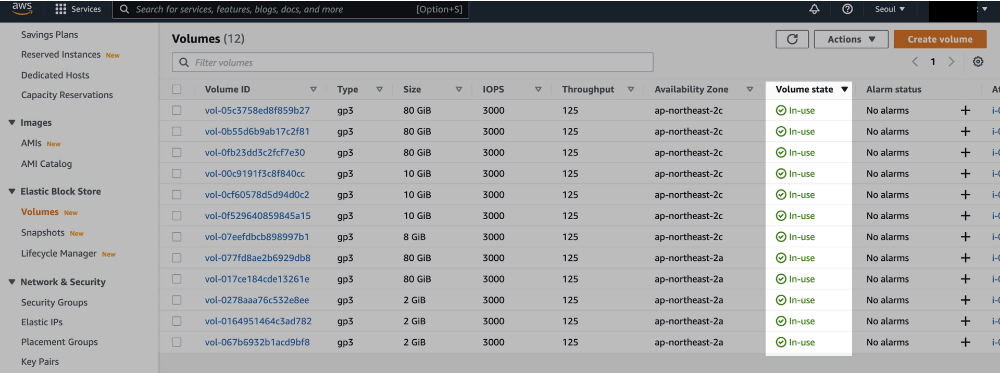

gp2 to gp3 마이그레이션 스크립트
개요
자동화 스크립트를 이용해서 지정한 리전의 모든 gp2 타입의 EBS 볼륨을 gp3로 전환하는 방법을 소개합니다.
AWS Management Console에서도 수작업으로 가능하지만 이 글에서는 AWS CLI를 활용한 쉘 스크립트로 변경 작업을 진행합니다.
만약 gp3 타입으로 변경해야할 EBS 볼륨이 200개일 경우, DevOps Engineer가 AWS Management Console로 하나씩 작업해야 한다면 생지옥이 없을 겁니다.
이를 해결하기 위해 쉘스크립트를 작성해서 자동화했습니다.
배경지식
스크립트
동작방식
스크립트를 실행하게 되면 지정한 AWS 리전에 위치한 gp2 타입의 EBS 볼륨이 gp3로 변경 시작됩니다.

주의사항
EBS 볼륨 타입 변경 과정은 기본적으로 무중단으로 진행되기 때문에 실제 프로덕션 환경에서 실행하더라도 서비스에는 영향을 주지 않고 안전하게 완료됩니다.
-
상황에 따라 EBS 볼륨 타입 변경이 최대 24시간 소요될 수 있습니다.
-
EBS 볼륨의 Disk I/O가 낮고, 할당된 총 용량보다 실제 사용중인 용량이 작을 수록 타입 변경이 더 빨리 끝납니다.
-
EBS 볼륨 변경 시 제한사항이 있습니다. 한 번 타입이나 사이즈를 변경한 EBS 볼륨은 6시간이 지난 후에 다시 변경 가능합니다.
-
타입 변경이 진행 중인 EBS 볼륨의 상태는 콘솔에서 확인할 때
In-use - optimizing (n%)으로 표시됩니다.
EKS 환경의 Persistent Volume
Amazon EKSElastic Kubernetes Service 워커노드에서 gp3, io2 타입의 EBS 볼륨을 사용하려면 EBS CSI Driver 설치가 필요합니다.
# -- EKS 클러스터에서 EBS CSI Driver 설치 확인
$ kubectl get sc gp3
NAME PROVISIONER RECLAIMPOLICY VOLUMEBINDINGMODE ALLOWVOLUMEEXPANSION AGE
gp3 (default) ebs.csi.aws.com Delete WaitForFirstConsumer false 55d
더 자세한 설명은 AWS Korea 블로그의 Migrating Amazon EKS clusters from gp2 to gp3 EBS volumes를 참고하세요.
준비사항
jq 설치
jq는 커맨드라인 환경에서 JSON 데이터를 조작할 수 있는 명령어입니다.
jq는 리눅스의 sed, awk, grep의 텍스트 제어와 동일한 방식으로 구조화된 JSON 데이터를 슬라이스, 필터링, 매핑 및 변환하는 데 사용합니다.
해당 스크립트 안에서 json 응답을 파싱해서 Volume ID와 Volume 상태를 추출하도록 동작하기 때문에, 스크립트를 실행하는 클라이언트에 jq 설치가 필요합니다.
macOS의 경우 패키지 관리자인 brew를 통해 간단하게 jq를 설치할 수 있습니다.
$ brew install jq
설치 후 jq 명령어의 동작을 확인합니다.
$ jq --version
jq-1.6
AWS CLI 설정
AWS CLI 설치와 인증이 미리 구성된 상태여야 합니다.
$ aws --version
aws-cli/2.7.5 Python/3.9.13 Darwin/21.5.0 source/arm64 prompt/off
IAM 권한
스크립트를 실행하기 전에 자신이 어떤 AWS 권한을 가지고 있는지 확인합니다.
$ aws sts get-caller-identity
# Check your aws permission before run shellscript.
중요: 스크립트를 실행하는 주체인 IAM User는 다음 2개의 EBS 볼륨 관련 Permission이 필요합니다.
ec2:ModifyVolume: EBS 볼륨 타입 gp2 → gp3로 변경할 때 필요ec2:DescribeVolumes: gp2 타입의 EBS 볼륨을 필터링해서 조회할 때 필요
사용법
스크립트 작성
스크립트 파일 이름은 gp3-migration.sh로 지정하고, 내용은 아래 그대로 복사 붙여넣기 합니다.
스크립트 내용 확인
#!/bin/bash
#==================================================
# [Last Modified Date]
# 2023-08-01
#
# [Author]
# Younsung Lee (cysl@kakao.com)
#
# [Description]
# Change all gp2 volumes to gp3 in a specific region
# Prerequisite: You have to install `jq` and `awscli`, FIRST.
#==================================================
region='ap-northeast-2'
aws_cmd_path=$(command -v aws)
# Function to check if a command exists
function command_exists() {
command -v "$1" >/dev/null 2>&1
}
# Function to check if jq is installed, and if not, exit the script
function check_jq_installed() {
if ! command_exists "jq"; then
echo "[e] 'jq' command not found. Please install 'jq' before running this script."
exit 1
fi
}
# Function to check if AWS CLI is installed, and if not, exit the script
function check_awscli_installed() {
if ! command_exists "aws"; then
echo "[e] 'aws' command not found. Please install 'awscli' before running this script."
exit 1
fi
}
# Function to find all gp2 volumes within the given region
function find_gp2_volumes() {
echo "[i] Start finding all gp2 volumes in ${region}"
volume_ids=$(
${aws_cmd_path} ec2 describe-volumes \
--region "${region}" \
--filters Name=volume-type,Values=gp2 | \
jq -r '.Volumes[].VolumeId'
)
echo "[i] List up all gp2 volumes in ${region}"
echo "========================================="
echo "$volume_ids"
echo "========================================="
}
# Function to confirm the action before migration
function confirm_migration() {
while true; do
read -p "Do you want to proceed with the migration? (y/n): " choice
case "$choice" in
[yY])
echo "[i] Starting volume migration..."
return 0
;;
[nN])
echo "[i] Migration canceled by the user."
exit 0
;;
*)
echo "[e] Invalid choice. Please enter 'y' or 'n'."
;;
esac
done
}
# Function to migrate a single gp2 volume to gp3
function migrate_volume_to_gp3() {
local volume_id="$1"
result=$(${aws_cmd_path} ec2 modify-volume \
--region "${region}" \
--volume-type gp3 \
--volume-id "${volume_id}" | \
jq -r '.VolumeModification.ModificationState'
)
if [ $? -eq 0 ] && [ "$result" == "modifying" ]; then
echo "[i] Volume $volume_id changed to state 'modifying' successfully."
else
echo "[e] ERROR: Couldn't change volume $volume_id type to gp3!"
exit 1
fi
}
# Main function to run the entire process
function main() {
check_jq_installed
check_awscli_installed
find_gp2_volumes
confirm_migration
echo "[i] Migrating all gp2 volumes to gp3"
for volume_id in $volume_ids; do
migrate_volume_to_gp3 "$volume_id"
done
echo "[i] All gp2 volumes have been migrated to gp3 successfully!"
}
# Call the main function to start the script
main
스크립트 실행
스크립트를 실행하기 전에 region 환경변수를 자신의 환경에 맞게 수정합니다.
region='ap-northeast-2'
터미널에서 스크립트를 실행합니다.
$ sh gp3-migration.sh
실행결과
터미널
gp3-migration.sh 스크립트를 실행하면 터미널에 결과값이 나타납니다.
$ sh gp3-migration.sh
[i] Start finding all gp2 volumes in ap-northeast-2
[i] List up all gp2 volumes in ap-northeast-2
=========================================
vol-1234567890abcdef0
vol-0987654321abcdef0
vol-abcdefgh123456780
vol-ijklmnop123456780
vol-12345678abcdefgh0
vol-098765abcdef12340
vol-abcdef12345678900
=========================================
Do you want to proceed with the migration? (y/n): y
[i] Starting volume migration...
[i] Migrating all gp2 volumes to gp3
[i] Volume vol-1234567890abcdef0 changed to state 'modifying' successfully.
[i] Volume vol-0987654321abcdef0 changed to state 'modifying' successfully.
[i] Volume vol-abcdefgh123456780 changed to state 'modifying' successfully.
[i] Volume vol-ijklmnop123456780 changed to state 'modifying' successfully.
[i] Volume vol-12345678abcdefgh0 changed to state 'modifying' successfully.
[i] Volume vol-098765abcdef12340 changed to state 'modifying' successfully.
[i] Volume vol-abcdef12345678900 changed to state 'modifying' successfully.
[i] All gp2 volumes have been migrated to gp3 successfully!
이 예제에서는 7개의 gp2 타입이 서울 리전에 존재하고, 이를 gp3로 모두 타입 변경하는 시나리오입니다.
AWS Management Console
gp3-migration.sh 스크립트를 실행한 후 AWS Management Console → EC2 → Volume 페이지를 확인합니다.

타입 변경이 진행중인 EBS 볼륨의 상태는 in-use - optimizing으로 표시됩니다.
gp2 → gp3 타입 변경은 EBS의 사용중인 용량, 인프라 환경에 따라 최대 24시간 소요될 수 있습니다.

잠시 기다리면 볼륨 상태가 in-use로 바뀌며 볼륨 타입이 변경 완료됩니다.
수십 개의 gp2 타입의 EBS 볼륨을 gp3로 전환하는 작업이 명령어 몇 줄로 끝났습니다.
작업 완료.
참고자료
AWS Storage Blog
Migrate your Amazon EBS volumes from gp2 to gp3 and save up to 20% on costs
볼륨 수정 시 요구사항
Amazon EBS 볼륨을 변경 작업 시의 요구 사항과 제한 사항
Script to automatically change all gp2 volumes to gp3 with aws-cli
gp3 타입으로 마이그레이션하는 스크립트에 대해 인사이트를 준 글